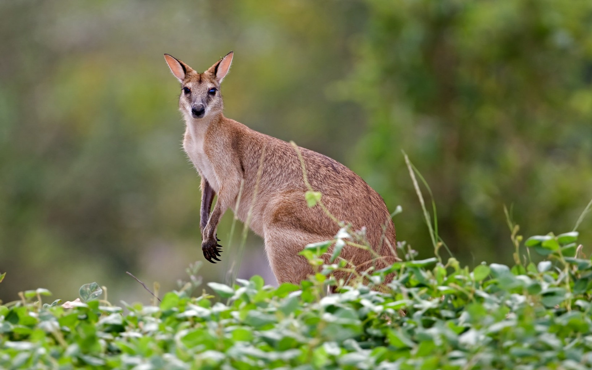

|
Kangaroos and their kin are characterized by large powerful hind limbs. (This is the inspiration for the scientific name of the family: Macropodidae). ... Kangaroo teeth are particularly adapted to their diet of tough grasses.
Gray kangaroos like the forests of Australia and Tasmania, on the other hand. The antilopine kangaroo can be found in the monsoonal eucalyptus woodlands of extreme northern Australia. Tree-kangaroos live in the upper branches of trees in the rainforests of Queensland, as well as on the island of New Guinea.
|

|